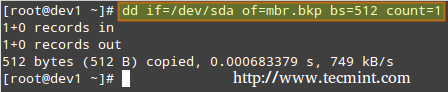
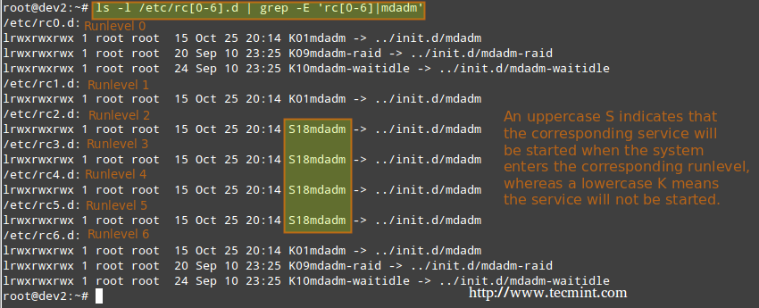

编译自：http://www.tecmint.com/linux-boot-process-and-manage-services/
作者： Gabriel Cánepa
原创：LCTT https://linux.cn/article-7365-1.html
译者： ictlyh
本文地址：https://linux.cn/article-7365-1.html
几个月前， Linux 基金会宣布 LFCS (Linux 基金会认证系统管理员) 认证诞生了，这个令人兴奋的新计划定位于让来自全球各地的初级到中级的 Linux 系统管理员得到认证。这其中包括维护已经在运行的系统和服务的能力、第一手的问题查找和分析能力、以及决定何时向开发团队提交问题的能力。
第七讲： Linux 基金会认证系统管理员
下面的视频简要介绍了 Linux 基金会认证计划。
本讲是系列教程中的第七讲，在这篇文章中，我们会介绍如何管理 Linux 系统自启动进程和服务，这是 LFCS 认证考试要求的一部分。
Linux 系统的启动程序包括多个阶段，每个阶段由一个不同的图示块表示。下面的图示简要总结了启动过程以及所有包括的主要组件。

Linux 启动过程
当你按下你机器上的电源键时，存储在主板 EEPROM 芯片中的固件初始化 POST(通电自检) 检查系统硬件资源的状态。POST 结束后，固件会搜索并加载位于第一块可用磁盘上的 MBR 或 EFI 分区的第一阶段引导程序，并把控制权交给引导程序。
MBR 是位于 BIOS 设置中标记为可启动磁盘上的第一个扇区，大小是 512 个字节。
下面的命令对 MBR 进行备份（在本例中，/dev/sda 是第一块硬盘）。结果文件 mbr.bkp 在分区表被破坏、例如系统不可引导时能排上用场。
当然，为了后面需要的时候能使用它，我们需要把它保存到别的地方（例如一个 USB 设备）。该文件能帮助我们重新恢复 MBR，这只在我们操作过程中没有改变硬盘驱动布局时才有效。
备份 MBR
# dd if=/dev/sda of=mbr.bkp bs=512 count=1

在 Linux 中备份 MBR
恢复 MBR
# dd if=mbr.bkp of=/dev/sda bs=512 count=1

在 Linux 中恢复 MBR
对于使用 EFI/UEFI 方式的系统， UEFI 固件读取它的设置来决定从哪里启动哪个 UEFI 应用。（例如， EFI 分区位于哪块磁盘或分区。
接下来，加载并运行第二阶段引导程序(又名引导管理器)。GRUB[GRand Unified Boot] 是 Linux 中最常使用的引导管理器。今天大部分使用的系统中都能找到它两个中的其中一个版本。
尽管 LFCS 考试目标没有明确要求了解 GRUB 内部知识，但如果你足够大胆并且不怕把你的系统搞乱（为了以防万一，你可以先在虚拟机上进行尝试）你可以运行：
# update-grub
为了使更改生效，你需要以 root 用户修改 GRUB 的配置。
首先， GRUB 加载默认的内核以及 initrd 或 initramfs 镜像。补充一句，initrd 或者 initramfs 帮助完成硬件检测、内核模块加载、以及发现挂载根目录文件系统需要的设备。
一旦真正的根目录文件系统启动，为了显示用户界面，内核就会执行系统和服务管理器（init 或 systemd，进程号 PID 一般为 1）开始普通用户态的引导程序。
init 和 systemd 都是管理其它守护进程的守护进程（后台进程），它们总是最先启动（系统引导时），最后结束（系统关闭时）。
Systemd 和 Init
Linux 中运行等级通过控制运行哪些服务来以不同方式使用系统。换句话说，运行等级控制着当前执行状态下可以完成什么任务（以及什么不能完成）。
传统上，这个启动过程是基于起源于 System V Unix 的形式，通过执行脚本启动或者停止服务从而使机器进入指定的运行等级(换句话说，是一个不同的系统运行模式)。
在每个运行等级中，独立服务可以设置为运行、或者在运行时关闭。一些主流发行版的最新版本中，已经移除了标准的 System V，而用一个称为 systemd（表示系统守护进程）的新服务和系统管理器代替，但为了兼容性，通常也支持 sysv 命令。这意味着你可以在基于 systemd 的发行版中运行大部分有名的 sysv 初始化工具。
除了启动系统进程，init 还会查看 /etc/inittab 来决定进入哪个运行等级。
| Runlevel | Description |
|---|---|
| 0 | 停止系统。运行等级 0 是一个用于快速关闭系统的特殊过渡状态。 |
| 1 | 别名为 s 或 S，这个运行等级有时候也称为维护模式。在这个运行等级启动的服务由于发行版不同而不同。通常用于正常系统操作损坏时低级别的系统维护。 |
| 2 | 多用户。在 Debian 系统及其衍生版中，这是默认的运行等级，还包括了一个图形化登录（如果有的话）。在基于红帽的系统中，这是没有网络的多用户模式。 |
| 3 | 在基于红帽的系统中，这是默认的多用户模式，运行除了图形化环境以外的所有东西。基于 Debian 的系统中通常不会使用这个运行等级以及等级 4 和 5。 |
| 4 | 通常默认情况下不使用，可用于自定制。 |
| 5 | 基于红帽的系统中，支持 GUI 登录的完全多用户模式。这个运行等级和等级 3 类似，但是有可用的 GUI 登录。 |
| 6 | 重启系统。 |
要在运行等级之间切换，我们只需要使用 init 命令更改运行等级：init N（其中 N 是上面列出的一个运行等级）。 请注意这并不是运行中的系统切换运行等级的推荐方式，因为它不会给已经登录的用户发送警告（因而导致他们丢失工作以及进程异常终结）。
相反，应该用 shutdown 命令重启系统（它首先发送警告信息给所有已经登录的用户，并锁住任何新的登录；然后再给 init 发送信号切换运行等级）但是，首先要在 /etc/inittab 文件中设置好默认的运行等级（系统引导到的等级）。
因为这个原因，按照下面的步骤切当地切换运行等级。以 root 用户在 /etc/inittab 中查找下面的行。
id:2:initdefault:
并用你喜欢的文本编辑器，例如 vim（本系列的 LFCS 系列第二讲：如何安装和使用纯文本编辑器 vi/vim），更改数字 2 为想要的运行等级。
然后，以 root 用户执行
# shutdown -r now
最后一个命令会重启系统，并使它在下一次引导时进入指定的运行等级，并会执行保存在 /etc/rc[runlevel].d 目录中的脚本以决定应该启动什么服务、不应该启动什么服务。例如，在下面的系统中运行等级 2。
在 Linux 中更改运行等级
为了在启动时启动或者停用系统服务，我们可以在 CentOS / openSUSE 中使用 chkconfig 命令，在 Debian 及其衍生版中使用 sysv-rc-conf 命令。这个工具还能告诉我们对于一个指定的运行等级预先配置的状态是什么。
列出某个服务的运行等级配置。
# chkconfig --list [service name]# chkconfig --list postfix# chkconfig --list mysqld

列出运行等级配置
从上图中我们可以看出，当系统进入运行等级 2 到 5 的时候就会启动 postfix，而默认情况下运行等级 2 到 4 时会运行 mysqld。现在假设我们并不希望如此。
例如，我们希望运行等级为 5 时也启动 mysqld，运行等级为 4 或 5 时关闭 postfix。下面分别针对两种情况进行设置（以 root 用户执行以下命令）。
为特定运行等级启用服务
# chkconfig --level [level(s)] service on# chkconfig --level 5 mysqld on
为特定运行等级停用服务
# chkconfig --level [level(s)] service off# chkconfig --level 45 postfix off

启用/停用服务
我们在基于 Debian 的系统中使用 sysv-rc-conf 完成类似任务。
配置服务自动启动时进入指定运行等级，同时禁止启动时进入其它运行等级。
我们可以用下面的命令查看启动 mdadm 时的运行等级。
# ls -l /etc/rc[0-6].d | grep -E 'rc[0-6]|mdadm'

查看运行中服务的运行等级
我们使用 sysv-rc-conf 设置防止 mdadm 在运行等级2 之外的其它等级启动。只需根据需要（你可以使用上下左右按键）选中或取消选中（通过空格键）。
# sysv-rc-conf
Sysv 运行等级配置
然后输入 q 退出。
重启系统并从步骤 1 开始再操作一遍。
# ls -l /etc/rc[0-6].d | grep -E 'rc[0-6]|mdadm'

验证服务运行等级
从上图中我们可以看出 mdadm 配置为只在运行等级 2 上启动。
编译自：http://www.tecmint.com/linux-boot-process-and-manage-services/
作者： Gabriel Cánepa
原创：LCTT https://linux.cn/article-7365-1.html
译者： ictlyh
本文由 LCTT 原创翻译，Linux中国首发。也想加入译者行列，为开源做一些自己的贡献么？欢迎加入 LCTT！
翻译工作和译文发表仅用于学习和交流目的，翻译工作遵照 CC-BY-NC-SA 协议规定，如果我们的工作有侵犯到您的权益，请及时联系我们。
欢迎遵照 CC-BY-NC-SA 协议规定转载，敬请在正文中标注并保留原文/译文链接和作者/译者等信息。
文章仅代表作者的知识和看法，如有不同观点，请楼下排队吐槽 :D
Linux.CN © 2003-2016 Linux中国 | Powered by DX | 图片存储于七牛云存储
京ICP备05083684号-1 京公网安备110105001595
服务条款 | 除特别申明外，本站原创内容版权遵循 CC-BY-NC-SA 协议规定


分享到微信朋友圈
打开微信，点击底部的“发现”，
使用“扫一扫”将网页分享至朋友圈。